New York City Travel Guide
The most populous city in the United States, described as the cultural, financial, and media capital of the world, significantly influencing commerce, entertainment, research, technology, education, politics, tourism, art, fashion, and sports, and is the most photographed city in the world.
-400.jpg)
Places to See in New York City
Uptown Manhattan
Uptown Manhattan is the area above 59th Street
-400.jpg)
PortableNYCTours, CC BY-SA 4.0, via Wikimedia Commons; Image Size Adjusted
.jpg){kind=link}
Apollo Theater
Historic performance venue showcasing live music, theater, comedy, and cultural events that celebrate the legacy and evolution of African American arts and entertainment.
-400.jpg)
PortableNYCTours, CC BY-SA 4.0, via Wikimedia Commons; Image Size Adjusted
Cathedral of St. John the Divine
Cathedral in the Morningside Heights neighborhood of Manhattan is the world's sixth-largest church by area

bryan..., CC BY-SA 2.0, via Wikimedia Commons; Image Size Adjusted
.jpg){kind=link}
American Museum of Natural History
Museum complex comprises 26 interconnected buildings housing 45 permanent exhibition halls, in addition to a planetarium and a library

Anthony Quintano from Hillsborough, NJ, United States, CC BY 2.0, via Wikimedia Commons; Image Size Adjusted
.jpg){kind=link}
Central Park
Most visited urban park in the United States, with an estimated 42 million visitors annually as of 2016, and is the most filmed location in the world
-400.jpg)
Anthony Quintano from Hillsborough, NJ, United States, CC BY 2.0, via Wikimedia Commons; Image Size Adjusted
Columbia University
Prestigious Ivy League research university featuring historic academic buildings, expansive campus grounds, and a long-standing tradition of innovation, scholarship, and cultural influence.
-400.jpg)
Rhododendrites, CC BY-SA 4.0, via Wikimedia Commons; Image Size Adjusted
.jpg){kind=link}
Frick Collection
Elegant art museum housed in a historic Gilded Age mansion, featuring masterworks of European painting, sculpture, and decorative arts displayed in intimate gallery rooms.
-400.jpg)
Rhododendrites, CC BY-SA 4.0, via Wikimedia Commons; Image Size Adjusted
General Grant National Memorial
Grand mausoleum honoring a former U.S. president, featuring monumental classical architecture, a domed structure, and a memorial interior open for public reflection.
-400.jpg)
Rhododendrites, CC BY-SA 4.0, via Wikimedia Commons; Image Size Adjusted
Hamilton Grange National Memorial
Restored historic home museum preserving the residence of a founding father, featuring period furnishings and exhibits that interpret early American history and legacy.

Rhododendrites, CC BY-SA 4.0, via Wikimedia Commons; Image Size Adjusted
Lincoln Center
16.3-acre complex of buildings houses nationally and internationally renowned performing arts organizations including the New York Philharmonic, the Metropolitan Opera, and the New York City Ballet
.jpg){kind=link}
Metropolitan Museum of Art (The Met)
Largest art museum in the United States. Its permanent collection contains over 2 million works, divided among 17 curatorial departments

Jdforrester, CC BY 4.0, via Wikimedia Commons; Image Size Adjusted

Roosevelt Island Tramway
Aerial tramway in New York City that spans the East River and connects Roosevelt Island to the Upper East Side of Manhattan

Jean-Christophe BENOIST, CC BY 3.0, via Wikimedia Commons; Image Size Adjusted

Solomon R. Guggenheim Museum
Art museum is the permanent home of a continuously expanding collection of Impressionist, Post-Impressionist, early Modern, and contemporary art and also features special exhibitions throughout the year
Midtown Manhattan
Midtown Manhattan is the area between 34th Street and 59th Street

Ajay Suresh from New York, NY, USA, CC BY 2.0, via Wikimedia Commons; Image Size Adjusted
.jpg){kind=link}
Broadway Theatre District
Theatrical performances which are presented in the 41 professional theatres, located in the Theater District and the Lincoln Center along Broadway
-400.jpg)
ajay_suresh, CC BY 2.0, via Wikimedia Commons; Image Size Adjusted
.jpg){kind=link}
Bryant Park
9.6-acre (39,000 m2) public park in Midtown Manhattan where the eastern half is occupied by the Main Branch of the New York Public Library and the western half contains a lawn, shaded walkways, and amenities such as a carousel

Misterweiss at English Wikipedia, Public domain, via Wikimedia Commons; Image Size Adjusted

Chrysler Building
Art Deco skyscraper in the Turtle Bay neighborhood on the East Side of Manhattan is the tallest brick building in the world with a steel framework

Hypnotoad78, CC BY-SA 4.0, via Wikimedia Commons; Image Size Adjusted

Edge NYC
Outdoor terrace jutting 80 feet outward south, providing panoramic views of Manhattan and the Hudson River

Grand Central Terminal
Commuter rail terminal in Midtown Manhattan known for its distinctive architecture and interior design that have earned it several landmark designations, including as a National Historic Landmark
_(51395759113)-400.jpg)
ajay_suresh, CC BY 2.0, via Wikimedia Commons; Image Size Adjusted
_(51395759113).jpg){kind=link}
Museum of Modern Art (MOMA)
Art museum located in Midtown Manhattan is often identified as one of the largest and most influential museums of modern art in the world
-400.jpg)
Ingfbruno, CC BY-SA 3.0, via Wikimedia Commons; Image Size Adjusted
.jpg){kind=link}
New York Public Library Main Branch
Flagship building in the New York Public Library system and a landmark in Midtown Manhattan

Ingfbruno, CC BY-SA 3.0, via Wikimedia Commons; Image Size Adjusted
Penn Station
Major underground transportation hub serving intercity and commuter rail lines with extensive connections, concourses, and passenger facilities beneath a large urban complex.

PumpkinSky, CC BY-SA 3.0, via Wikimedia Commons; Image Size Adjusted

Radio City Music Hall
Art Deco styled entertainment venue within Rockefeller Center known for its large auditorium, which was the world's largest when the Hall first opened

Rockefeller Center
Large complex consisting of 19 commercial buildings covering 22 acres (89,000 m2) between 48th Street and 51st Street in Midtown Manhattan. The 14 original Art Deco buildings, commissioned by the Rockefeller family, span the area between Fifth Avenue and Sixth Avenue

Jean-Christophe BENOIST, CC BY 3.0, via Wikimedia Commons; Image Size Adjusted

St. Patrick Cathedral
Catholic cathedral in the Midtown Manhattan is the largest Gothic Revival Catholic cathedral in North America

Saggittarius A, CC BY-SA 4.0, via Wikimedia Commons; Image Size Adjusted

Summit One Vanderbilt
Multi-level glass observatory offering immersive art installations, mirrored rooms, and panoramic skyline views from towering heights.

NBCUniversal, CC BY 3.0, via Wikimedia Commons; Image Size Adjusted
30 Rockefeller Plaza
Centerpiece of Rockefeller Center houses the headquarters and New York studios of television network NBC; the Rainbow Room restaurant; and Top of the Rock observation deck

Times Square
Major commercial intersection, tourist destination, entertainment center, brightly lit by numerous billboards and advertisements, is one of the world's busiest pedestrian areas, and the hub of the Broadway Theater District

Basil D Soufi, CC BY-SA 3.0, via Wikimedia Commons; Image Size Adjusted
.jpg){kind=link}
United Nations Headquarters
Complex that has served as the official headquarters of the United Nations since its completion in 1951 and holds the seats of the principal organs of the UN, including the General Assembly and the Security Council
Between Midtown and Downtown
,_Empire_State_Building_--_2012_--_6436-1000-400.jpg)
NBCUniversal, CC BY 3.0, via Wikimedia Commons; Image Size Adjusted
30 Rockefeller Plaza / Top of the Rock
Centerpiece of Rockefeller Center houses the headquarters and New York studios of television network NBC; the Rainbow Room restaurant; and Top of the Rock observation deck

9/11 Memorial & Museum
Memorial and museum in New York City commemorating the September 11, 2001 attacks

MusikAnimal, CC BY-SA 4.0, via Wikimedia Commons; Image Size Adjusted

African Burial Ground National Monument
Historic memorial and archaeological site preserving the remains and legacy of one of the earliest and largest burial grounds for people of African descent in North America.
bryan..., CC BY-SA 2.0, via Wikimedia Commons; Image Size Adjusted
American Museum of Natural History
Museum complex comprises 26 interconnected buildings housing 45 permanent exhibition halls, in addition to a planetarium and a library
NBCUniversal, CC BY 3.0, via Wikimedia Commons; Image Size Adjusted
Apollo Theater
Historic performance venue showcasing live music, theater, comedy, and cultural events that celebrate the legacy and evolution of African American arts and entertainment.
Bowling Green Park
Oldest public park in New York City
Ajay Suresh from New York, NY, USA, CC BY 2.0, via Wikimedia Commons; Image Size Adjusted
Broadway Theatre District
Theatrical performances which are presented in the 41 professional theatres, located in the Theater District and the Lincoln Center along Broadway

Postdlf, CC BY-SA 3.0, via Wikimedia Commons; Image Size Adjusted

Bronx Zoo
One of the largest zoos in the United States by area and is the largest metropolitan zoo in the United States by area

NBCUniversal, CC BY 3.0, via Wikimedia Commons; Image Size Adjusted
Brookfield Place
Large mixed-use complex featuring luxury retail shops, diverse dining options, office spaces, and a public atrium with waterfront views and cultural programming.

Brooklyn Bridge
Southernmost bridge connecting Manhattan Island and Long Island, where only passenger vehicles and pedestrian and bicycle traffic are permitted, is A major tourist attraction since its opening and an icon of New York City

Brooklyn Bridge Park
85-acre park on the Brooklyn side of the East River includes Main Street Parks, historic Fulton Ferry Landing, Piers 1-6, Empire Stores and the Tobacco Warehouse, and a series of parks and bike paths around Brooklyn
-400.jpg)
NBCUniversal, CC BY 3.0, via Wikimedia Commons; Image Size Adjusted
Brooklyn Museum
Expansive art museum featuring vast collections spanning ancient civilizations to contemporary works, housed in a landmark Beaux-Arts building with diverse cultural exhibitions.
ajay_suresh, CC BY 2.0, via Wikimedia Commons; Image Size Adjusted
Bryant Park
9.6-acre (39,000 m2) public park in Midtown Manhattan where the eastern half is occupied by the Main Branch of the New York Public Library and the western half contains a lawn, shaded walkways, and amenities such as a carousel

NBCUniversal, CC BY 3.0, via Wikimedia Commons; Image Size Adjusted
Castle Clinton National Monument
Historic coastal fort turned national monument serving as a gateway to New York Harbor and a key site in the city’s military and immigration history.
PortableNYCTours, CC BY-SA 4.0, via Wikimedia Commons; Image Size Adjusted
Cathedral of St. John the Divine
Cathedral in the Morningside Heights neighborhood of Manhattan is the world's sixth-largest church by area
Anthony Quintano from Hillsborough, NJ, United States, CC BY 2.0, via Wikimedia Commons; Image Size Adjusted
Central Park
Most visited urban park in the United States, with an estimated 42 million visitors annually as of 2016, and is the most filmed location in the world
Charging Bull
Bronze sculpture depicting a bull, the symbol of aggressive financial optimism and prosperity

MusikAnimal, CC BY-SA 4.0, via Wikimedia Commons; Image Size Adjusted
Chelsea Market
Food hall, shopping mall, office building and television production facility located in the Chelsea neighborhood of Manhattan

Chinatown
Neighborhood in Lower Manhattan is the home to the highest concentration of Chinese people in the Western Hemisphere and is one of the oldest Chinese ethnic enclaves
Misterweiss at English Wikipedia, Public domain, via Wikimedia Commons; Image Size Adjusted
Chrysler Building
Art Deco skyscraper in the Turtle Bay neighborhood on the East Side of Manhattan is the tallest brick building in the world with a steel framework
NBCUniversal, CC BY 3.0, via Wikimedia Commons; Image Size Adjusted
Columbia University
Prestigious Ivy League research university featuring historic academic buildings, expansive campus grounds, and a long-standing tradition of innovation, scholarship, and cultural influence.

MusikAnimal, CC BY-SA 4.0, via Wikimedia Commons; Image Size Adjusted
.jpg){kind=link}
Coney Island
Peninsular neighborhood and entertainment area in the southwestern section of Brooklyn
-400.jpg)
Sam valadi, CC BY 2.0, via Wikimedia Commons; Image Size Adjusted

Cooper Union
Historic private college known for its programs in art, architecture, and engineering, featuring landmark buildings, public lectures, and a legacy of accessible education in the heart of Manhattan.

DUMBO
Short for Down Under the Manhattan Bridge Overpass, a neighborhood of Brooklyn remade into an upscale residential and commercial community for art galleries, and currently a center for technology startups
Hypnotoad78, CC BY-SA 4.0, via Wikimedia Commons; Image Size Adjusted
Edge NYC
Outdoor terrace jutting 80 feet outward south, providing panoramic views of Manhattan and the Hudson River

NBCUniversal, CC BY 3.0, via Wikimedia Commons; Image Size Adjusted
Elevated Acre
Hidden elevated park featuring a landscaped lawn, amphitheater seating, and scenic waterfront views from a quiet terrace above the surrounding city streets.

Ellis Island
Island in New York Harbor that was the busiest immigrant inspection station in the United States and is now a national museum of immigration

Sam valadi, CC BY 2.0, via Wikimedia Commons; Image Size Adjusted
Empire State Building
Iconic 102-story Art Deco skyscraper in Midtown Manhattan

Federal Hall
Historic building in the Financial District where the colonial Stamp Act Congress met to draft its message to King George III claiming entitlement to the same rights as the residents of Britain and other historical events

PortableNYCTours, CC BY-SA 4.0, via Wikimedia Commons; Image Size Adjusted
.jpg){kind=link}
Flatiron Building
Triangular 22-story, 285-foot-tall (86.9 m) steel-framed landmarked building located in the eponymous Flatiron District neighborhood of Manhattan.

Eden, Janine and Jim, CC BY 2.0, via Wikimedia Commons; Image Size Adjusted

Flushing Meadows Corona Park
Public park in the northern part of Queens is the fourth-largest public park in New York City

Jim.henderson, Public domain, via Wikimedia Commons; Image Size Adjusted

Fraunces Tavern
Museum and restaurant in the Financial District of Lower Manhattan that played a prominent role in history before, during, and after the American Revolution
NBCUniversal, CC BY 3.0, via Wikimedia Commons; Image Size Adjusted
Frick Collection
Elegant art museum housed in a historic Gilded Age mansion, featuring masterworks of European painting, sculpture, and decorative arts displayed in intimate gallery rooms.
_06-400.jpg)
NBCUniversal, CC BY 3.0, via Wikimedia Commons; Image Size Adjusted
Fulton Center
Modern transit and retail hub featuring interconnected subway lines, a central glass atrium with natural lighting, and a mix of shopping and dining spaces.
_134_-_Stage_II,_FDR_Four_Freedoms_Park-400.jpg)
NBCUniversal, CC BY 3.0, via Wikimedia Commons; Image Size Adjusted
Gantry Plaza State Park
Waterfront state park featuring landscaped lawns, restored industrial gantries, public piers, and unobstructed skyline views across the river.
NBCUniversal, CC BY 3.0, via Wikimedia Commons; Image Size Adjusted
General Grant National Memorial
Grand mausoleum honoring a former U.S. president, featuring monumental classical architecture, a domed structure, and a memorial interior open for public reflection.

Jim.henderson, CC BY 4.0, via Wikimedia Commons; Image Size Adjusted
_jeh.jpg){kind=link}
Ghostbusters Headquarters
Iconic firehouse recognized worldwide as the exterior filming location for a famous movie headquarters, still operating as an active emergency response station.
-400.jpg)
NBCUniversal, CC BY 3.0, via Wikimedia Commons; Image Size Adjusted
Governors Island
Historic island destination featuring expansive parkland, cultural attractions, waterfront views, and seasonal recreation areas set within a former military site.
Grand Central Terminal
Commuter rail terminal in Midtown Manhattan known for its distinctive architecture and interior design that have earned it several landmark designations, including as a National Historic Landmark

Greenwich Village
Neighborhood on the west side of Lower Manhattan known as an artists' haven, the bohemian capital, the cradle of the modern LGBT movement, and the East Coast birthplace of both the Beat and '60s counterculture movements
NBCUniversal, CC BY 3.0, via Wikimedia Commons; Image Size Adjusted
Hamilton Grange National Memorial
Restored historic home museum preserving the residence of a founding father, featuring period furnishings and exhibits that interpret early American history and legacy.
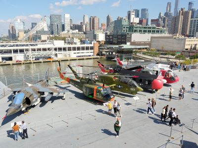
NBCUniversal, CC BY 3.0, via Wikimedia Commons; Image Size Adjusted
Intrepid Museum
Historic aircraft carrier transformed into a museum featuring interactive exhibits, military aircraft, a space shuttle, and a submarine that showcase naval, aviation, and space exploration history.
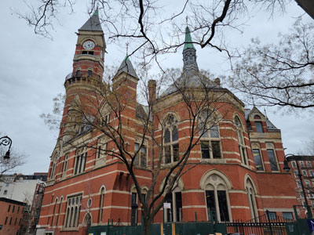
NBCUniversal, CC BY 3.0, via Wikimedia Commons; Image Size Adjusted
Jefferson Market Library
A landmark Victorian Gothic library housed in a former courthouse, featuring historic architecture, reading rooms, public collections, cultural programs, and one of Manhattan's most recognizable clock towers.
Rhododendrites, CC BY-SA 4.0, via Wikimedia Commons; Image Size Adjusted
Lincoln Center
16.3-acre complex of buildings houses nationally and internationally renowned performing arts organizations including the New York Philharmonic, the Metropolitan Opera, and the New York City Ballet
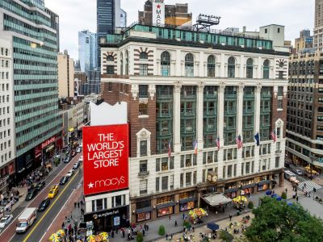
NBCUniversal, CC BY 3.0, via Wikimedia Commons; Image Size Adjusted
Macy’s Herald Square
Massive multi-level department store offering a vast selection of fashion, beauty, home goods, and dining options within a historic retail landmark setting.
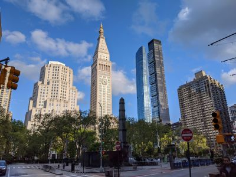
NBCUniversal, CC BY 3.0, via Wikimedia Commons; Image Size Adjusted
Madison Square Park
Historic urban green space featuring landscaped lawns, public art installations, shaded seating areas, and recreational spaces for relaxation and community gatherings.
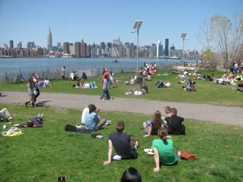
NBCUniversal, CC BY 3.0, via Wikimedia Commons; Image Size Adjusted
Marsha P. Johnson State Park
Waterfront green space with open lawns, skyline views, public gathering areas, and historic remnants of a former industrial rail yard.

Joyofmuseums, CC BY-SA 4.0, via Wikimedia Commons; Image Size Adjusted

MET Cloisters
Museum in Upper Manhattan, specializing in European medieval art and architecture, with a focus on the Romanesque and Gothic periods and contains a large collection of medieval artworks shown in the architectural settings of French monasteries and abbeys
Metropolitan Museum of Art (The Met)
Largest art museum in the United States. Its permanent collection contains over 2 million works, divided among 17 curatorial departments
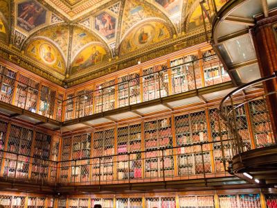
NBCUniversal, CC BY 3.0, via Wikimedia Commons; Image Size Adjusted
Morgan Library and Museum
Historic library and museum complex showcasing rare manuscripts, books, art, and exhibitions within an architecturally elegant cultural institution.
Ajay Suresh from New York, NY, USA, CC BY 2.0, via Wikimedia Commons; Image Size Adjusted
.jpg){kind=link}
Museum of American Finance
Museum dedicated to the history, culture, and impact of American finance through exhibits, artifacts, documents, and educational programs exploring the evolution of financial markets and institutions.
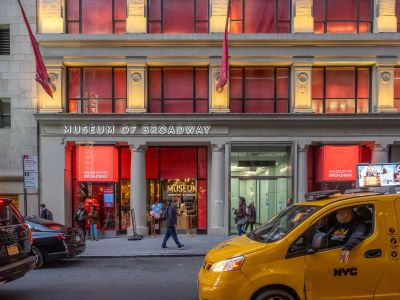
NBCUniversal, CC BY 3.0, via Wikimedia Commons; Image Size Adjusted
Museum of Broadway
Interactive museum experience featuring immersive exhibits, theatrical sets, and artifacts that trace the history and creative process of Broadway productions.
ajay_suresh, CC BY 2.0, via Wikimedia Commons; Image Size Adjusted
Museum of Modern Art (MOMA)
Art museum located in Midtown Manhattan is often identified as one of the largest and most influential museums of modern art in the world
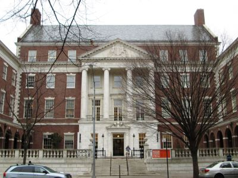
NBCUniversal, CC BY 3.0, via Wikimedia Commons; Image Size Adjusted
Museum of the City of New York
History museum showcasing the evolution of New York City through immersive exhibitions, artifacts, photography, and multimedia storytelling.
Ajay Suresh from New York, NY, USA, CC BY 2.0, via Wikimedia Commons; Image Size Adjusted
Nathan's Famous Hot Dogs
Chain of fast food restaurants specializing in hot dogs. The original Nathan's restaurant stands at the corner of Surf and Stillwell Avenues in the Coney Island neighborhood of the Brooklyn
Ajay Suresh from New York, NY, USA, CC BY 2.0, via Wikimedia Commons; Image Size Adjusted
National Jazz Museum in Harlem
Museum dedicated to preserving, promoting, and interpreting jazz through exhibitions, educational programs, performances, and collections celebrating the music's enduring cultural legacy.
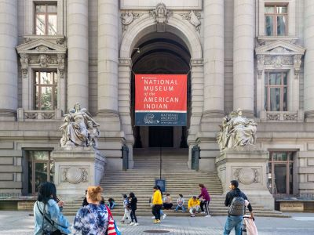
NBCUniversal, CC BY 3.0, via Wikimedia Commons; Image Size Adjusted
National Museum of the American Indian
Smithsonian museum dedicated to the history, culture, and art of Indigenous peoples of the Americas, housed within a grand historic landmark building.
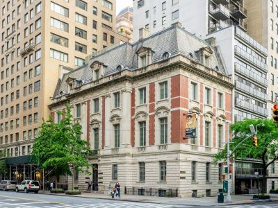
NBCUniversal, CC BY 3.0, via Wikimedia Commons; Image Size Adjusted
Neue Galerie New York
Elegant museum dedicated to early 20th-century German and Austrian art and design, featuring masterpieces by Klimt, Schiele, and other influential artists.

Momos, CC BY-SA 3.0, via Wikimedia Commons; Image Size Adjusted

New York City Hall
Located at the center of City Hall Park in the Civic Center area of Lower Manhattan, the building is the oldest city hall in the United States that still houses its original governmental functions
Gh9449, CC BY-SA 4.0, via Wikimedia Commons; Image Size Adjusted

New York City Subway
Rapid transit system owned by the City of New York and opened on October 27, 1904, is one of the world's oldest public transit systems, one of the most-used, and the one with the most stations
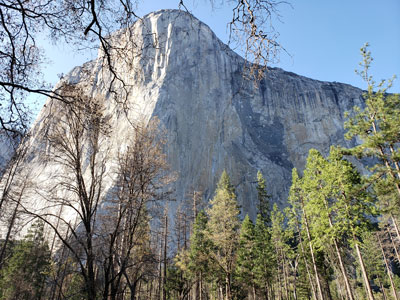
Grinnell Point and Swiftcurrent Lake from the Many Glacier Hotel
Jeff P from Berkeley, CA, USA, CC BY 2.0, via Wikimedia Commons; Image Size Adjusted
.jpg){kind=link}
New York City: Where to Stay
Historic site and national monument commemorating the burial ground of enslaved and free African Americans in colonial New York.
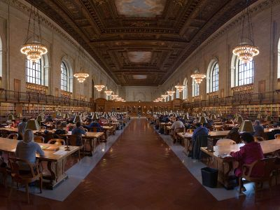
Ingfbruno, CC BY-SA 3.0, via Wikimedia Commons; Image Size Adjusted
New York Public Library Main Branch
Flagship building in the New York Public Library system and a landmark in Midtown Manhattan

Andy C, CC BY-SA 3.0, via Wikimedia Commons; Image Size Adjusted

New York Stock Exchange (Wall Street)
The world's largest stock exchange and is the leading US money center for international financial activities and the foremost US location for the conduct of wholesale financial services.

The All-Nite Images from NY, NY, USA, CC BY-SA 2.0, via Wikimedia Commons; Image Size Adjusted
.jpg){kind=link}
New York Transit Museum
Museum displaying historical artifacts of the New York City Subway, bus, and commuter rail systems in the greater New York City metropolitan region

Armando Olivo Martín del Campo, CC BY-SA 4.0, via Wikimedia Commons; Image Size Adjusted

One World Trade Center
Main building of the rebuilt World Trade Center complex in Lower Manhattan, is the tallest building in the United States and in the Western Hemisphere, and the sixth-tallest in the world. The tower also has a three-story observation deck
NBCUniversal, CC BY 3.0, via Wikimedia Commons; Image Size Adjusted
Penn Station
Major underground transportation hub serving intercity and commuter rail lines with extensive connections, concourses, and passenger facilities beneath a large urban complex.
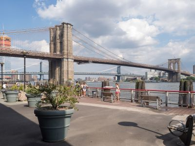
NBCUniversal, CC BY 3.0, via Wikimedia Commons; Image Size Adjusted
Pier 15 East River Esplanade
Two-level waterfront public pier featuring landscaped seating areas, observation decks, and scenic riverfront spaces for recreation and relaxation.

King of Hearts, CC BY-SA 4.0, via Wikimedia Commons; Image Size Adjusted

Prospect Park
Urban park in Brooklyn including 90-acre (36 ha) Long Meadow, the Picnic House, Litchfield Villa, Prospect Park Zoo, the Boathouse, and Concert Grove
PumpkinSky, CC BY-SA 3.0, via Wikimedia Commons; Image Size Adjusted
Radio City Music Hall
Art Deco styled entertainment venue within Rockefeller Center known for its large auditorium, which was the world's largest when the Hall first opened
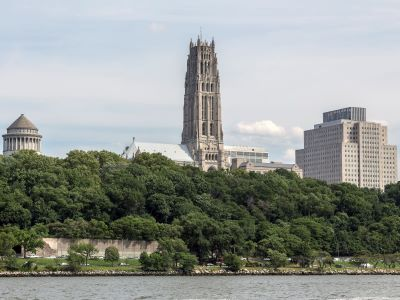
NBCUniversal, CC BY 3.0, via Wikimedia Commons; Image Size Adjusted
Riverside Cathedral
Neo-Gothic church complex featuring a towering steeple, ornate stained glass, and expansive interior spaces used for worship, tours, and cultural events.
Rockefeller Center
Large complex consisting of 19 commercial buildings covering 22 acres (89,000 m2) between 48th Street and 51st Street in Midtown Manhattan. The 14 original Art Deco buildings, commissioned by the Rockefeller family, span the area between Fifth Avenue and Sixth Avenue
Jdforrester, CC BY 4.0, via Wikimedia Commons; Image Size Adjusted
Roosevelt Island Tramway
Aerial tramway in New York City that spans the East River and connects Roosevelt Island to the Upper East Side of Manhattan

NBCUniversal, CC BY 3.0, via Wikimedia Commons; Image Size Adjusted
Saint Mark's Church
Historic Episcopal church and cultural landmark hosting worship services, artistic performances, and community programs within a centuries-old architectural setting.
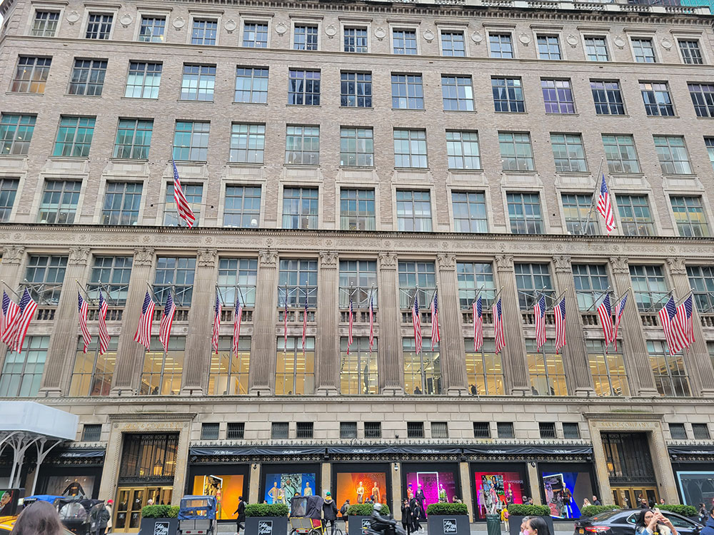
NBCUniversal, CC BY 3.0, via Wikimedia Commons; Image Size Adjusted
Saks Fifth Avenue
Iconic multi-level luxury department store offering designer fashion, beauty products, fine accessories, and upscale dining experiences within an elegant retail environment.

Epicgenius, CC BY-SA 4.0, via Wikimedia Commons; Image Size Adjusted

Snug Harbor Cultural Center & Botanical Garden
Historic cultural campus featuring botanical gardens, museums, art galleries, performance spaces, nature trails, and educational programs that unite history, culture, and horticulture.
Jean-Christophe BENOIST, CC BY 3.0, via Wikimedia Commons; Image Size Adjusted
Solomon R. Guggenheim Museum
Art museum is the permanent home of a continuously expanding collection of Impressionist, Post-Impressionist, early Modern, and contemporary art and also features special exhibitions throughout the year
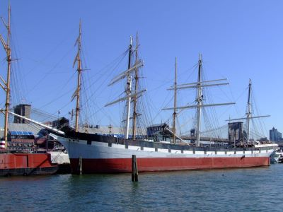
NBCUniversal, CC BY 3.0, via Wikimedia Commons; Image Size Adjusted
South Street Seaport Museum
Historic maritime museum complex preserving ships, artifacts, and exhibits that explore New York City’s seaport, trade, and waterfront heritage.
Jean-Christophe BENOIST, CC BY 3.0, via Wikimedia Commons; Image Size Adjusted
St. Patrick's Cathedral
Catholic cathedral in the Midtown Manhattan is the largest Gothic Revival Catholic cathedral in North America
_22_-_Staten_Island_Ferry-400.jpg)
Tdorante10, CC BY-SA 4.0, via Wikimedia Commons; Image Size Adjusted
_22_-_Staten_Island_Ferry.jpg){kind=link}
Staten Island Ferry
Iconic ferry running 5.2 miles through New York Harbor between the New York City boroughs of Manhattan and Staten Island

Statue of Liberty
Colossal neoclassical sculpture on Liberty Island in New York Harbor within New York City
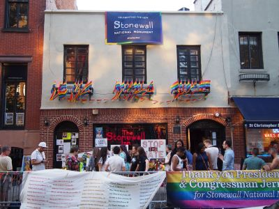
NBCUniversal, CC BY 3.0, via Wikimedia Commons; Image Size Adjusted
Stonewall National Monument
Historic public park and landmark commemorating the LGBTQ rights movement with interpretive displays, gathering spaces, and preserved surroundings reflecting a pivotal civil rights site.
Saggittarius A, CC BY-SA 4.0, via Wikimedia Commons; Image Size Adjusted
Summit One Vanderbilt
Multi-level glass observatory offering immersive art installations, mirrored rooms, and panoramic skyline views from towering heights.

The Battery
25-acre public park located at the southern tip of Manhattan Island facing New York Harbor containing multiple monuments

Matias Garabedian from Montreal, Canada, CC BY-SA 2.0, via Wikimedia Commons; Image Size Adjusted
.jpg){kind=link}
The High Line
1.45-mile-long (2.33 km) elevated linear park, greenway and rail trail created on a former New York Central Railroad spur on the west side of Manhattan
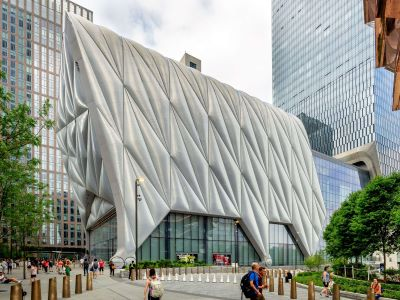
NBCUniversal, CC BY 3.0, via Wikimedia Commons; Image Size Adjusted
The Shed
Innovative arts center with a transformable structure hosting performances, exhibitions, and multidisciplinary cultural events in a dynamic modern space.
Epicgenius, CC BY-SA 4.0, via Wikimedia Commons; Image Size Adjusted
The Shops and Restaurants at Hudson Yards Plaza
Upscale indoor shopping mall in New York City

Jim.henderson, CC BY 4.0, via Wikimedia Commons; Image Size Adjusted
Little Island at Peir 55
Artificial island park in the Hudson River west of Manhattan, adjoining Hudson River Park and covers 2.4 acres and is supported by 132 pot-shaped structures (called "tulips") suspended above the water

Little Italy
Neighborhood in Lower Manhattan in New York City, known for its large Italian population

ajay_suresh, CC BY 2.0, via Wikimedia Commons; Image Size Adjusted
.jpg){kind=link}
Lower East Side Tenement Museum
Museum including two historical tenement buildings were home to an estimated 15,000 people, from over 20 nations, between 1863 and 2011, promotes tolerance and historical perspective on the immigrant experience
ajay_suresh, CC BY 2.0, via Wikimedia Commons; Image Size Adjusted
Museum of Chinese in America (MOCA)
Museum dedicated to preserving and interpreting the history, culture, and contributions of Chinese Americans through artifacts, multimedia exhibits, and community stories spanning generations.
-400.jpg)
Alan Light, CC BY 2.0, via Wikimedia Commons; Image Size Adjusted
.jpg){kind=link}
The Plaza Hotel
21-story, French Renaissance-inspired château style luxury hotel and condominium apartment building in Midtown Manhattan at the southeastern corner of Central Park

SoHo
Neighborhood in Lower Manhattan known for its location of many artists' lofts and art galleries, and its variety of shops ranging from trendy upscale boutiques to national and international chain store outlets
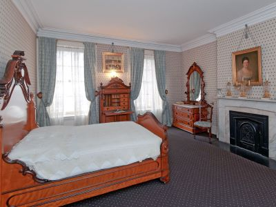
NBCUniversal, CC BY 3.0, via Wikimedia Commons; Image Size Adjusted
Theodore Roosevelt Birthplace National Historic Site
Historic brownstone museum recreating the childhood home of President Theodore Roosevelt, offering guided tours, period rooms, and exhibits on his life and legacy.
Times Square
Major commercial intersection, tourist destination, entertainment center, brightly lit by numerous billboards and advertisements, is one of the world's busiest pedestrian areas, and the hub of the Broadway Theater District
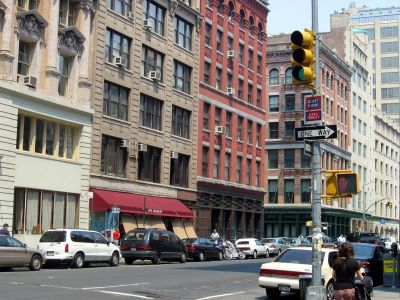
NBCUniversal, CC BY 3.0, via Wikimedia Commons; Image Size Adjusted
Tribeca
Historic Manhattan neighborhood known for cobblestone streets, industrial architecture, upscale dining, and a blend of residential and creative spaces.

Jean-Christophe BENOIST, CC BY 3.0, via Wikimedia Commons; Image Size Adjusted

Trinity Church
Historic parish church in the Financial District of Lower Manhattan, known for its history, location, architecture and endowment
Basil D Soufi, CC BY-SA 3.0, via Wikimedia Commons; Image Size Adjusted
United Nations Headquarters
Complex that has served as the official headquarters of the United Nations since its completion in 1951 and holds the seats of the principal organs of the UN, including the General Assembly and the Security Council

Vessel
16-story, 150-foot-tall structure of connected staircases between the buildings of Hudson Yards, located in the 5-acre Hudson Yards Public Square

Jean-Christophe BENOIST, CC BY 3.0, via Wikimedia Commons; Image Size Adjusted

Washington Square Park
9.75-acre (39,500 m2) public park in the Greenwich Village neighborhood of Lower Manhattan is the best known of New York City's public parks and an icon as well as a meeting place and center for cultural activity
Lower Manhattan
Lower Manhattan is the area below Chambers Street
9/11 Memorial & Museum
Memorial and museum in New York City commemorating the September 11, 2001 attacks
The Battery
25-acre public park located at the southern tip of Manhattan Island facing New York Harbor containing multiple monuments
Brookfield Place
Large mixed-use complex featuring luxury retail shops, diverse dining options, office spaces, and a public atrium with waterfront views and cultural programming.
Castle Clinton National Monument
Historic coastal fort turned national monument serving as a gateway to New York Harbor and a key site in the city’s military and immigration history.

Charging Bull
Bronze sculpture depicting a bull, the symbol of aggressive financial optimism and prosperity
Elevated Acre
Hidden elevated park featuring a landscaped lawn, amphitheater seating, and scenic waterfront views from a quiet terrace above the surrounding city streets.
Ellis Island
Island in New York Harbor that was the busiest immigrant inspection station in the United States and is now a national museum of immigration
Federal Hall
Historic building in the Financial District where the colonial Stamp Act Congress met to draft its message to King George III claiming entitlement to the same rights as the residents of Britain and other historical events
Jim.henderson, Public domain, via Wikimedia Commons; Image Size Adjusted
Fraunces Tavern
Museum and restaurant in the Financial District of Lower Manhattan that played a prominent role in history before, during, and after the American Revolution
Jim.henderson, Public domain, via Wikimedia Commons; Image Size Adjusted
Fulton Center
Modern transit and retail hub featuring interconnected subway lines, a central glass atrium with natural lighting, and a mix of shopping and dining spaces.
Jim.henderson, Public domain, via Wikimedia Commons; Image Size Adjusted
Governor's Island
Historic island destination featuring expansive parkland, cultural attractions, waterfront views, and seasonal recreation areas set within a former military site.
Momos, CC BY-SA 3.0, via Wikimedia Commons; Image Size Adjusted
New York City Hall
Located at the center of City Hall Park in the Civic Center area of Lower Manhattan, the building is the oldest city hall in the United States that still houses its original governmental functions

Gh9449, CC BY-SA 4.0, via Wikimedia Commons; Image Size Adjusted
New York City Subway
Rapid transit system owned by the City of New York and opened on October 27, 1904, is one of the world's oldest public transit systems, one of the most-used, and the one with the most stations
Andy C, CC BY-SA 3.0, via Wikimedia Commons; Image Size Adjusted
New York Stock Exchange (Wall Street)
The world's largest stock exchange and is the leading US money center for international financial activities and the foremost US location for the conduct of wholesale financial services.
Armando Olivo Martín del Campo, CC BY-SA 4.0, via Wikimedia Commons; Image Size Adjusted
One World Trade Center
Main building of the rebuilt World Trade Center complex in Lower Manhattan, is the tallest building in the United States and in the Western Hemisphere, and the sixth-tallest in the world. The tower also has a three-story observation deck
Tdorante10, CC BY-SA 4.0, via Wikimedia Commons; Image Size Adjusted
Staten Island Ferry
Iconic ferry running 5.2 miles through New York Harbor between the New York City boroughs of Manhattan and Staten Island
Statue of Liberty
Colossal neoclassical sculpture on Liberty Island in New York Harbor within New York City
Jean-Christophe BENOIST, CC BY 3.0, via Wikimedia Commons; Image Size Adjusted
Trinity Church
Historic parish church in the Financial District of Lower Manhattan, known for its history, location, architecture and endowment

World Trade Center Station / The Oculus
Designed by the Spanish architect Santiago Calatrava, station consisting of white ribs that interlock high above the ground and interior containing two underground floors, which house part of the Westfield World Trade Center mall
Brooklyn
Brooklyn Bridge
Southernmost bridge connecting Manhattan Island and Long Island, where only passenger vehicles and pedestrian and bicycle traffic are permitted, is A major tourist attraction since its opening and an icon of New York City
Brooklyn Bridge Park
85-acre park on the Brooklyn side of the East River includes Main Street Parks, historic Fulton Ferry Landing, Piers 1-6, Empire Stores and the Tobacco Warehouse, and a series of parks and bike paths around Brooklyn
Brooklyn Museum
Expansive art museum featuring vast collections spanning ancient civilizations to contemporary works, housed in a landmark Beaux-Arts building with diverse cultural exhibitions.
MusikAnimal, CC BY-SA 4.0, via Wikimedia Commons; Image Size Adjusted
Coney Island
Peninsular neighborhood and entertainment area in the southwestern section of Brooklyn
DUMBO
Short for Down Under the Manhattan Bridge Overpass, a neighborhood of Brooklyn remade into an upscale residential and commercial community for art galleries, and currently a center for technology startups

Ajay Suresh from New York, NY, USA, CC BY 2.0, via Wikimedia Commons; Image Size Adjusted
Nathan's Famous
Chain of fast food restaurants specializing in hot dogs. The original Nathan's restaurant stands at the corner of Surf and Stillwell Avenues in the Coney Island neighborhood of the Brooklyn
The All-Nite Images from NY, NY, USA, CC BY-SA 2.0, via Wikimedia Commons; Image Size Adjusted
New York Transit Museum
Museum displaying historical artifacts of the New York City Subway, bus, and commuter rail systems in the greater New York City metropolitan region
King of Hearts, CC BY-SA 4.0, via Wikimedia Commons; Image Size Adjusted
Prospect Park
Urban park in Brooklyn including 90-acre (36 ha) Long Meadow, the Picnic House, Litchfield Villa, Prospect Park Zoo, the Boathouse, and Concert Grove
The Bronx
Postdlf, CC BY-SA 3.0, via Wikimedia Commons; Image Size Adjusted
Bronx Zoo
One of the largest zoos in the United States by area and is the largest metropolitan zoo in the United States by area
Joyofmuseums, CC BY-SA 4.0, via Wikimedia Commons; Image Size Adjusted
The MET Cloisters
Museum in Upper Manhattan, specializing in European medieval art and architecture, with a focus on the Romanesque and Gothic periods and contains a large collection of medieval artworks shown in the architectural settings of French monasteries and abbeys
Queens
Eden, Janine and Jim, CC BY 2.0, via Wikimedia Commons; Image Size Adjusted
Flushing Meadows Corona Park
Public park in the northern part of Queens is the fourth-largest public park in New York City
Eden, Janine and Jim, CC BY 2.0, via Wikimedia Commons; Image Size Adjusted
Gantry Plaza State Park
Waterfront state park featuring landscaped lawns, restored industrial gantries, public piers, and unobstructed skyline views across the river.
Overview
New York City is the most populous city in the United States and one of the most recognizable places on earth. Often called the cultural, financial, and media capital of the world, it is home to Wall Street, the United Nations, Broadway, and a skyline that has appeared in more films, photographs, and postcards than almost any other. The city sits on one of the world's great natural harbors at the mouth of the Hudson River, and for more than a century it has been the place where people from every corner of the globe arrive to start new lives, chase careers, and make art, money, and music.
That energy is why New York is one of the most visited cities in the world, drawing a record 66.6 million visitors in 2019 and again approaching that level in recent years. Travelers come for the landmarks, including the Statue of Liberty, the Empire State Building, Times Square, the Brooklyn Bridge, and Central Park, and for world-class museums, Broadway theater, and some of the best food anywhere. Just as many come simply to walk the streets, where hundreds of distinct neighborhoods and as many as 800 spoken languages make a single afternoon feel like a trip through several countries. The city is also open around the clock, so there is always something to see, eat, or hear at any hour.
History
Dutch colonists founded New Amsterdam at the southern tip of Manhattan in 1624 as a fur-trading outpost of the Dutch West India Company. The English captured the settlement in 1664 and renamed it New York. During the American Revolution it was occupied by British forces, and in 1789 it became the first capital of the United States under the Constitution, where George Washington was inaugurated. After the opening of the Erie Canal in 1825, New York became the nation's leading port and commercial center, and from 1892 to 1954 Ellis Island processed millions of immigrants. In 1898 Manhattan, Brooklyn, Queens, the Bronx, and Staten Island were consolidated into a single city. The 20th century brought the subway, the great skyscrapers, and the rise of Wall Street, and the city has since rebuilt and reinvented itself through the Great Depression, the fiscal crisis of the 1970s, and the attacks of September 11, 2001.
Ellis Island and Immigration
From 1892 to 1954, Ellis Island in New York Harbor was the nation's main immigration station, processing more than 12 million people, many of whom first saw America from a ship passing the Statue of Liberty. Millions of Americans can trace at least one ancestor through its halls. Waves of Irish, German, Italian, Eastern European Jewish, and Chinese newcomers settled in crowded neighborhoods like the Lower East Side, which gave rise to Little Italy, Chinatown, and the tenements now preserved at the Tenement Museum. Later arrivals from Puerto Rico, the Caribbean, Latin America, South Asia, West Africa, and Eastern Europe added still more. Today roughly 3 in 10 New Yorkers were born outside the United States, and that mix shapes nearly everything visitors experience, including the food, languages, festivals, parades, houses of worship, and neighborhood identities from Flushing to Jackson Heights to Brighton Beach. The Ellis Island National Museum of Immigration, reached by ferry together with the Statue of Liberty, tells these stories and offers family-history research.
Wall Street
Wall Street takes its name from a wall built by Dutch settlers in the 1600s, and it grew into the heart of American finance. Brokers began trading under a buttonwood tree in 1792, an agreement that led to the New York Stock Exchange, which today is among the world's largest exchanges along with the Nasdaq. Federal Hall, on the same street, is where George Washington took the oath of office, and the Federal Reserve Bank of New York nearby holds one of the world's largest stores of gold. The financial industry is a major source of the city's jobs and tax revenue, and it funds the banking, law, insurance, and real estate industries around it, while decisions made here move markets and affect retirement accounts, businesses, and economies around the world. Wall Street has also shaped the nation's history, from the Panic of 1907 and the 1929 crash to the 2008 financial crisis. Visitors can see the exterior of the Stock Exchange, the Charging Bull, Trinity Church, and the Fearless Girl statue, though the Exchange floor is generally closed to the public.
Skyscrapers
New York is the city most associated with the skyscraper. Early towers like the 1902 Flatiron Building and the 1913 Woolworth Building gave way to the Art Deco race of the late 1920s and 1930s, when the 1,046-foot Chrysler Building (1930) and the Empire State Building (1931), which stood as the world's tallest building for about 40 years, defined the skyline. The 1916 zoning law required buildings to step back as they rose, giving older towers their distinctive tiered look. The Twin Towers of the World Trade Center followed in the 1970s, and since 2014 One World Trade Center has stood at a symbolic 1,776 feet as the tallest building in the Western Hemisphere. A new generation of slender residential towers, including Central Park Tower on Billionaires' Row, and newer developments such as Hudson Yards and Summit One Vanderbilt have kept adding to the skyline. Visitors can see the city from above at the Empire State Building, Top of the Rock, Edge, Summit One Vanderbilt, and One World Observatory, and architecture fans enjoy simply walking Midtown and the Financial District with their heads up.
The Five Boroughs
New York City is made up of five boroughs. Manhattan is the dense center of tourism, business, and culture. Brooklyn is the most populous borough, known for its distinctive neighborhoods, arts scene, Brooklyn Bridge, Coney Island, and Prospect Park. Queens is the largest borough by area and among the most ethnically diverse places in the world, home to Flushing Meadows-Corona Park, Citi Field, the U.S. Open, and both major airports, LaGuardia and John F. Kennedy. The Bronx is home to Yankee Stadium, the Bronx Zoo, the New York Botanical Garden, and the birthplace of hip hop. Staten Island is the most suburban borough, reached by the free Staten Island Ferry, with the Greenbelt, Historic Richmond Town, and Snug Harbor Cultural Center.
Manhattan
Most first-time visitors spend nearly all of their time on this narrow island, about 13 miles long and 2 miles wide. Its street grid, laid out in 1811, makes it easy to navigate: avenues run north-south, streets run east-west, and numbers generally rise as you head north. Manhattan is commonly divided into Uptown, Midtown, and Downtown, and each has its own personality, from the museums and residential streets of the north to the skyscrapers of the center and the historic streets of the south.
Uptown Manhattan
Uptown generally refers to areas north of Midtown, around 59th Street. It is anchored by Central Park, and along its edges sit the Upper East Side's Museum Mile, which includes the Metropolitan Museum of Art, the Guggenheim, and the Frick Collection, and the Upper West Side's American Museum of Natural History and Lincoln Center. Farther north are Columbia University, the Cathedral of St. John the Divine, and Harlem, a center of African American history and culture with the Apollo Theater, famed soul food, and jazz clubs. Washington Heights and Inwood hold the Cloisters, Fort Tryon Park, and Hamilton Grange National Memorial. Uptown is quieter and more residential than the rest of the island and is a good choice for travelers who want museums and parks over crowds.
Midtown Manhattan
Midtown is what most people picture when they think of New York. It is the busiest part of the city and holds Times Square, the Theater District and Broadway, Rockefeller Center, Radio City Music Hall, Grand Central Terminal, the Empire State Building, the Chrysler Building, Bryant Park, the New York Public Library, Fifth Avenue shopping, MoMA, and the United Nations. It also contains Penn Station and Port Authority Bus Terminal, Madison Square Garden, and the largest concentration of hotels. Midtown is loud, crowded, and exciting, and is best explored both by day and after dark when the lights are on.
Between Midtown and Downtown
The neighborhoods in between, including Chelsea, the Flatiron District, Gramercy, Union Square, Greenwich Village, and the West Village, offer a more local feel. Highlights include the High Line elevated park, Chelsea Market, the Flatiron Building, Madison Square Park, Washington Square Park, the Whitney Museum, Hudson Yards and the Vessel, Little Island, and the Union Square Greenmarket. Greenwich Village has a long bohemian and LGBTQ history, and the area is packed with cafes, jazz clubs, comedy cellars, and some of the best restaurants for strolling and dining.
Lower Manhattan
The southern tip of the island is where the city began, and it holds the oldest streets and the most history. Visitors can see the Financial District and Wall Street, Trinity Church, the Charging Bull, Federal Hall, the National September 11 Memorial and Museum, One World Trade Center and its observatory, Brookfield Place, and the Oculus. Battery Park is the departure point for ferries to the Statue of Liberty and Ellis Island, and the Staten Island Ferry leaves from nearby. Nearby neighborhoods include Tribeca, SoHo with its cast-iron buildings and boutiques, Chinatown, Little Italy, the Lower East Side, and the South Street Seaport, and the Brooklyn Bridge is a short walk from City Hall.
Getting Around
The best way to get around New York is not by car. The subway runs 24 hours a day, 7 days a week, and reaches nearly every neighborhood in four of the five boroughs. Riders pay by tapping a credit card, debit card, or phone at the OMNY reader, or by using a MetroCard where still accepted. Buses fill in the gaps and are especially useful for crosstown trips in Manhattan, and the MTA's Select Bus Service routes are faster. The Staten Island Ferry is free and offers views of the Statue of Liberty and the Lower Manhattan skyline, and NYC Ferry serves the East River, Rockaways, and Bronx at a low fare. Walking, taxis, and rideshares round out the options. Renting a car is a bad idea: traffic is heavy, parking is scarce and often costs $40 to $80 or more a day in garages, street rules are confusing and heavily enforced, and bridge and tunnel tolls add up. Most vehicles entering Manhattan below 60th Street are also charged a congestion pricing toll. If you want a car for a trip out of the city, rent one for that day only, preferably from an airport or a location outside Manhattan.
Getting In and Out of the City
Three major airports serve the area. John F. Kennedy International (JFK) and LaGuardia (LGA) are in Queens, and Newark Liberty International (EWR) is in New Jersey. JFK is reached by the AirTrain connecting to the subway and Long Island Rail Road, LaGuardia mainly by buses, taxis, and rideshares, and Newark by the AirTrain to NJ Transit and Amtrak trains that run to Penn Station. Amtrak serves Penn Station, with Northeast Corridor trains from Boston, Philadelphia, and Washington, D.C., and commuter rail (Metro-North, Long Island Rail Road, and NJ Transit) connects the suburbs. Long-distance buses arrive at Port Authority Bus Terminal and other stops around the city. If you are driving in, plan to park the car on arrival at a hotel garage, a lot outside Manhattan, or a commuter rail station, and use transit from there. Expect heavy traffic and tolls on the bridges and tunnels, especially at rush hour and on summer weekends.
Accommodations
Staying in Manhattan, particularly Midtown, puts you close to the major attractions, Broadway, and the subway, but it is also the most expensive option and rooms are often small. Staying in Brooklyn or Queens, for example in Williamsburg, Downtown Brooklyn, Dumbo, or Long Island City, usually brings lower prices, more space, and a short subway ride, often 15 to 30 minutes, to Midtown, and Long Island City is only one stop from Grand Central. Hotels near JFK or LaGuardia are convenient for early flights. Visitors on a tighter budget may choose to stay outside the city, in places like Jersey City or Hoboken in New Jersey, which have PATH train service to Lower Manhattan and Midtown in about 10 to 20 minutes, or in the suburbs along Metro-North, Long Island Rail Road, or NJ Transit lines. These options save money, but allow extra time for commuting and check the last train times if you plan to be out late. Book well ahead for fall, December, and major event weekends, when prices are highest.
Sightseeing and Popular Landmarks
Must-see icons include the Statue of Liberty and Ellis Island, the Empire State Building, Top of the Rock at Rockefeller Center, Edge and the Summit One Vanderbilt observation decks, One World Observatory, Times Square, Grand Central Terminal, the Chrysler Building, the Brooklyn Bridge, and the National September 11 Memorial and Museum. A walk across the Brooklyn Bridge to Dumbo is one of the best free experiences in the city, and the Staten Island Ferry offers free harbor views. Visitors who plan to see many attractions may save with a sightseeing pass, and the busiest sites sell timed tickets, so it is wise to reserve in advance.
Culture and Museums
New York has one of the greatest concentrations of museums and performing arts in the world. The Metropolitan Museum of Art, the Museum of Modern Art (MoMA), the Guggenheim, the Whitney, the Frick Collection, and the American Museum of Natural History are among the best known, and the Intrepid Sea, Air and Space Museum, the Tenement Museum, and the Brooklyn Museum are also worth a visit. On stage, Broadway's roughly 40 theaters present major musicals and plays, while Lincoln Center is home to the Metropolitan Opera, the New York Philharmonic, and the New York City Ballet. Carnegie Hall, the Apollo Theater, and the city's many jazz clubs, comedy venues, and off-Broadway theaters add to the scene. Many museums offer free or pay-what-you-wish hours, and discounted same-day Broadway tickets are sold at the TKTS booth in Times Square.
Parks
The city has about 30,000 acres of parkland and 14 miles of public beaches. Central Park (843 acres) is the best known, with the Mall, Bethesda Terrace, Bow Bridge, the Ramble, and Strawberry Fields, and visitors can walk, bike, row a boat, or take a carriage ride. Other favorites include Prospect Park and Brooklyn Bridge Park in Brooklyn, the High Line and Hudson River Park in Manhattan, Washington Square Park, Bryant Park, Flushing Meadows-Corona Park in Queens, and Gantry Plaza State Park. Coney Island and the Rockaways offer beaches, and the Bronx's Pelham Bay Park is the largest park in the city.
Cuisine
New York is arguably the best food city in the United States, with more than 20,000 restaurants and more Michelin-starred restaurants than almost any other American city. Fine dining includes names such as Per Se, Eleven Madison Park, Le Bernardin, and Masa, and many tasting-menu restaurants hold one, two, or three stars, though the lists change every year. Just as important is the casual food: the city offers a wide range of international cuisine, from Chinese in Flushing and Chinatown, to Italian in Arthur Avenue in the Bronx, Korean in Koreatown, Indian on Lexington Avenue, and Caribbean, Ethiopian, Greek, Mexican, and Middle Eastern throughout the boroughs. Many foods were created or popularized here, including New York-style pizza, bagels with lox, the pastrami sandwich, New York cheesecake, the hot dog at Coney Island, egg creams, Eggs Benedict, and the Waldorf salad. Visitors can sample the famous dollar slice, street-cart halal, and old-school delis such as Katz's, and the city's food halls and markets, including Chelsea Market and Smorgasburg, are good places to try many things at once. Reservations at top restaurants often open weeks ahead.
Sports
New York has more major professional teams than most cities. In baseball, the Yankees play at Yankee Stadium in the Bronx and the Mets at Citi Field in Queens. The Knicks and Rangers play at Madison Square Garden in Midtown, the Nets at Barclays Center in Brooklyn, and the Islanders at UBS Arena in Elmont, on Long Island. New York City FC plays soccer in Queens at Citi Field, and the Liberty of the WNBA play at Barclays Center. The Giants and Jets play football at MetLife Stadium in New Jersey, a short train ride from Penn Station. The U.S. Open tennis championship is held every late summer at the USTA Billie Jean King National Tennis Center in Queens, and the New York City Marathon takes place each November.
Seasons
New York has four distinct seasons and is open to visitors year-round, since most attractions are indoors or operate in all weather. Spring (April to early June) brings cherry blossoms, blooming parks, and mild weather. Summer is hot and humid, with outdoor concerts, free festivals, rooftop bars, and beaches, but it can be crowded, and heat waves can make subway stations uncomfortable. Fall (September to early November) is considered by many the best time to visit, with comfortable temperatures and fall colors in Central Park and Prospect Park. Winter is cold, and snow is possible from December to March, but visitors come for the holiday windows, the Rockefeller Center Christmas Tree, ice skating, and New Year's Eve in Times Square. Seasonal changes affect a few things: ferries and boat tours may be delayed by storms, some outdoor attractions and the beaches have reduced hours or close in the off-season, and heavy snow or hurricane-related storms can temporarily disrupt transit and flights. Check conditions before you go.
Tourist Safety
New York is among the safest large cities in the country, and millions of visitors enjoy it each year without problems. Use the same common sense as in any big city. Stay aware of your surroundings, keep phones and wallets secure in front pockets or zipped bags, and watch for pickpockets in crowded places like Times Square and busy subway cars. Be skeptical of street hustlers, unlicensed tour sellers, and anyone offering "free" items or rides. At night, stick to well-lit, busy streets; the subway runs all night, but late-night trains are less frequent, so many travelers prefer to take a taxi or rideshare late, and it helps to wait for trains near the conductor's car or in the center of the platform where other riders gather. Most of the outer boroughs are safe and residential, but it is wise to research a neighborhood before you go and check the route after dark. If you are traveling alone, share your plans with someone, keep your phone charged, and avoid showing valuables.
This article uses material from the Wikipedia article "New York City", which is released under the Creative Commons Attribution-Share-Alike License 3.0. It also draws on official Metropolitan Transportation Authority resources, including the MTA Riding the Bus Guide and MTA Subway and Bus Fares page, as well as information from NYC Tourism + Conventions, NYC Official Guide, NYC Parks, the National Park Service, the MICHELIN Guide, the Port Authority of New York and New Jersey, NYPD public safety guidance, and the official websites of the museums, sports teams, and venues mentioned. Visitors should consult official resources for the latest fares, schedules, hours, ticket prices, and service alerts.